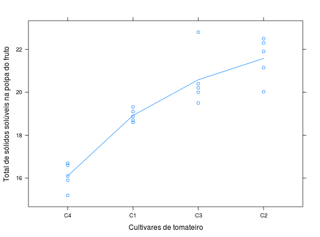

Experimento em delineamento inteiramente casualizado, com 5 repetições e 4 cultivares de tomateiro onde os totais de sólidos solúveis na poupa dos frutos foram avaliados.
Um data.frame com 20 observações e 3 variáveis, em que
cultrepttsspBARROS; DIAS (2009), Exercício 6, Cap. 9, pág. 260.
library(lattice) data(DiasEx9.6.6)#> Warning: data set ‘DiasEx9.6.6’ not foundstr(DiasEx9.6.6)#> 'data.frame': 20 obs. of 3 variables: #> $ cult: Factor w/ 4 levels "C1","C2","C3",..: 1 1 1 1 1 2 2 2 2 2 ... #> $ rept: int 1 2 3 4 5 1 2 3 4 5 ... #> $ tssp: num 18.6 18.7 18.9 19.1 19.3 ...xtabs(~cult, data = DiasEx9.6.6)#> cult #> C1 C2 C3 C4 #> 5 5 5 5unstack(DiasEx9.6.6, tssp ~ cult)#> C1 C2 C3 C4 #> 1 18.60 22.50 20.00 16.7 #> 2 18.70 21.90 20.40 15.2 #> 3 18.88 22.30 22.80 15.9 #> 4 19.10 20.03 19.50 16.1 #> 5 19.31 21.15 20.21 16.6xyplot(tssp ~ reorder(cult, tssp), type = c("p", "a"), data = DiasEx9.6.6, ylab = "Total de sólidos solúveis na polpa do fruto", xlab = "Cultivares de tomateiro")